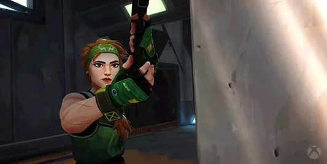

| Character | Info | Abillity |
|---|---|---|
 |
Neon Filipino Agent Neon surges forward at shocking speeds, discharging bursts of bioelectric radiance as fast as her body generates it. She races ahead to catch enemies off guard, then strikes them down quicker than lightning. |
RELAY BOLT-INSTANTLY throw an energy bolt that bounces once. Upon hitting each surface, the bolt electrifies the ground below with a concussive blast. HIGH GEAR-INSTANTLY channel Neon’s power for increased speed. When charged, ALT FIRE to trigger an electric slide. Slide charge resets every two kills. FAST LANE-FIRE two energy lines forward on the ground that extend a short distance or until they hit a surface. The lines rise into walls of static electricity that block vision and damage enemies passing through them. OVERDRIVE-Unleash Neon’s full power and speed for a short duration. FIRE to channel the power into a deadly lightning beam with high movement accuracy. The duration resets on each kill. |
| Jett Representing her home country of South Korea, Jett's agile and evasive fighting style lets her take risks no one else can. She runs circles around every skirmish, cutting enemies before they even know what hit them. |
UPDRAFT-INSTANTLY propel Jett high into the air. TAILWIND-ACTIVATE to prepare a gust of wind for a limited time. RE-USE the wind to propel Jett in the direction she is moving. If Jett is standing still, she propels forward. Tailwind charge resets every two kills. CLOUDBURST-INSTANTLY throw a projectile that expands into a brief vision-blocking cloud on impact with a surface. HOLD the ability key to curve the smoke in the direction of your crosshair. BLADE STORM-EQUIP a set of highly accurate throwing knives. FIRE to throw a single knife and recharge knives on a kill. ALT FIRE to throw all remaining daggers but does not recharge on a kill. |
|
| Reyna Forged in the heart of Mexico, Reyna dominates single combat, popping off with each kill she scores. Her capability is only limited by her raw skill, making her highly dependent on performance. |
Devour-Enemies killed by Reyna leave behind Soul Orbs that last 3 seconds. INSTANTLY consume a nearby soul orb, rapidly healing for a short duration. Health gained through this skill exceeding 100 will decay over time. If EMPRESS is active, this skill will automatically cast and not consume the orb. Dismiss-NSTANTLY consume a nearby soul orb, becoming intangible for a short duration. If EMPRESS is active, also become invisible. Leer-EQUIP an ethereal destructible eye. ACTIVATE to cast the eye a short distance forward. The eye will Nearsight all enemies who look at it. Empress-INSTANTLY enter a frenzy, increasing firing speed, equip and reload speed dramatically. Scoring a kill renews the duration. |
|
| Sage The stronghold of China, Sage creates safety for herself and her team wherever she goes. Able to revive fallen friends and stave off aggressive pushes, she provides a calm center to a hellish fight. |
SLOW ORB-EQUIP a slowing orb. FIRE to throw a slowing orb forward that detonates upon landing, creating a lingering field that slows players caught inside of it. HEALING ORB-EQUIP a healing orb. FIRE with your crosshairs over a damaged ally to activate a heal-over-time on them. ALT FIRE while Sage is damaged to activate a self heal-over-time. BARRIER ORB-EQUIP a barrier orb. FIRE places a solid wall. ALT FIRE rotates the targeter. RESURRECTION-EQUIP a resurrection ability. FIRE with your crosshairs placed over a dead ally to begin resurrecting them. After a brief channel, the ally will be brought back to life with full health. |
|
|  | Skye Hailing from Australia, Skye and her band of beasts trail-blaze the way through hostile territory. With her creations hampering the enemy, and her power to heal others, the team is strongest and safest by Skye’s side. |
Trailblazer-EQUIP a Tasmanian tiger trinket. FIRE to send out and take control of the predator. While in control, FIRE to leap forward, exploding in a concussive blast and damaging directly hit enemies. Guiding Light-EQUIP a hawk trinket. FIRE to send it forward. HOLD FIRE to guide the hawk in the direction of your crosshair. RE-USE while the hawk is in flight to transform it into a flash that plays a hit confirm if an enemy was within range and line of sight. Regrowth-EQUIP a healing trinket. HOLD FIRE to channel, healing allies in range and line of sight. Can be reused until her healing pool is depleted. Skye cannot heal herself. Seekers-EQUIP a Seeker trinket. FIRE to send out three Seekers to track down the three closest enemies. If a Seeker reaches its target, it Nearsights them. Enemies can destroy the Seekers. |